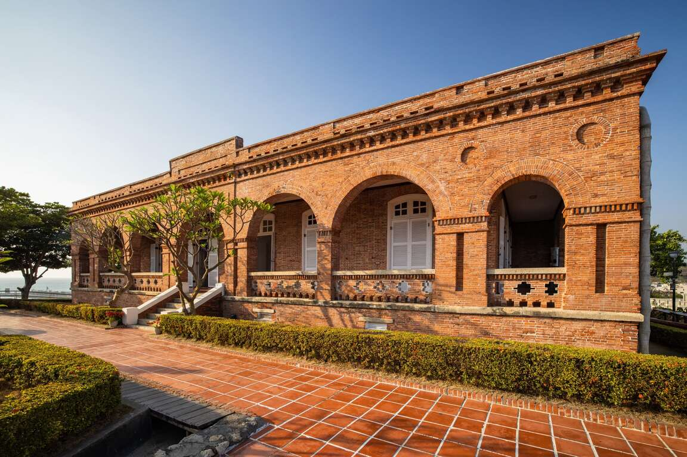
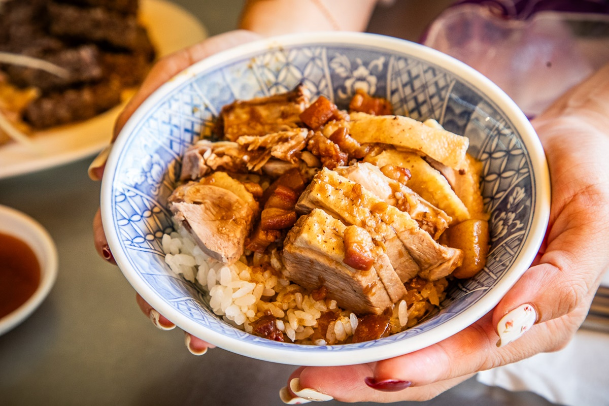
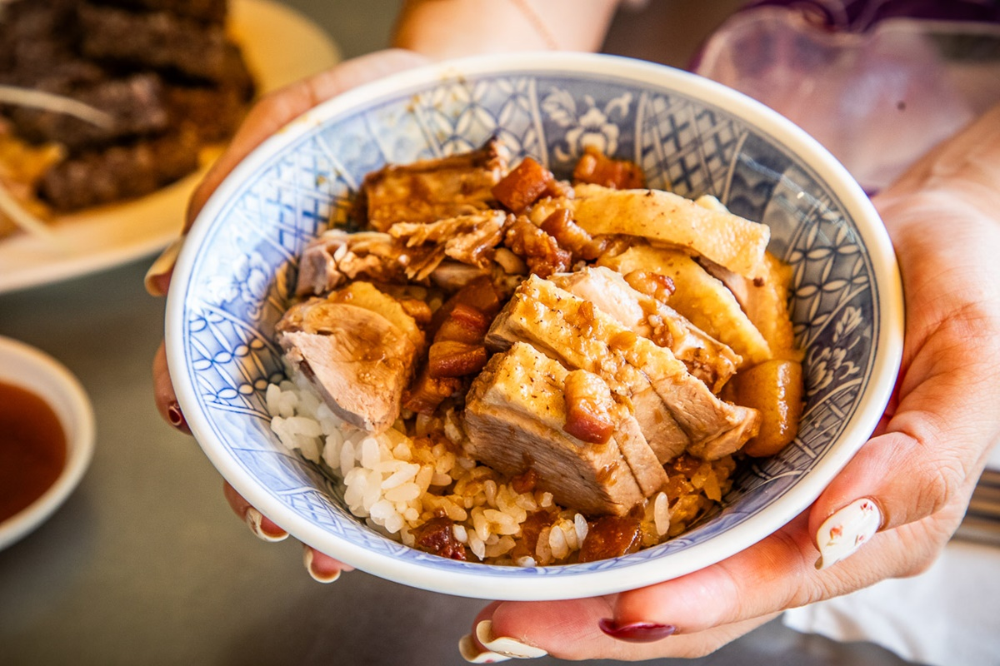
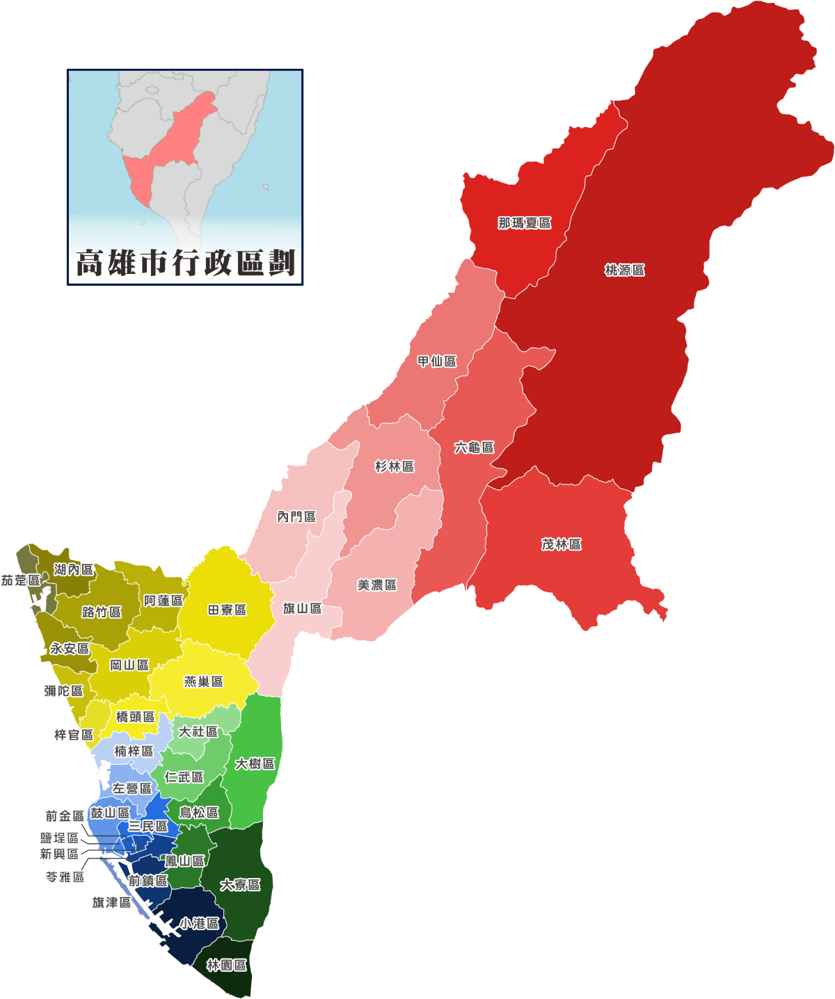

距今四百年前(明嘉靖年間)，高雄港口附近地帶，聚居了平埔族原住民(即馬卡道族)，先住民稱此平埔族叫「Takau」，後來漢人就根據這個平埔族語音譯成「打狗」或「打鼓」。 狗與鼓乃是一音之轉。 所以「打狗」、「打鼓」乃是音譯而來的地名。
-景點-
流連忘返的網美打卡景點-大港橋
大港橋以貝殼和海豚作為設計概念，使用純白色調、流線型設計，再搭配36階的旋轉式樓梯，創造空間感，更大幅縮減高雄港灣區景點的步行時間，甚至還能騎自行車上大港橋欣賞高雄港的美景，增加不少便利性。
河岸兩側也在規劃市集，每個週末都會有古著選物、職人手作、美食餐車等，讓你逛好逛滿。
知名的傳統宗教建築-龍虎塔
位於左營區的蓮池潭，南鄰龜山、北倚半屏山，清朝時期因潭中遍植荷花，每逢夏季清香四溢，素有「泮水荷香」美譽，成為清代的鳳山八景之一；蓮池潭畔的指標性建築「龍虎塔」，讓人感受到東方宗教文化的震撼，曾被美國有線電視CNN特別推薦，是高雄市最具傳統宗教色彩的風景區之一。
蓮池潭畔廟宇眾多達20多座，以龍虎塔、春秋閣、北極玄天上帝、孔廟等最知名，其中，龍虎塔最受國際旅客喜愛，是來高雄必訪的熱門景點，CNN曾於2014年刊登「愛上高雄十大理由(10 reasons to love Kaohsiung)」中，特別推薦消災解厄的「蓮池潭龍虎塔」。
-地理位置-
位置
東起桃源區與花蓮縣、台東縣相鄰，西至台灣海峽，南為林園區與屏東縣接壤，並納管南海上的東沙島及南沙太平島，北為桃源區玉山山頂，毗鄰嘉義與台南。
面積
約2951.8524平方公里
氣候
熱帶季風氣候
-小吃-
記憶中的家鄉味
在高雄，小吃遍地開花，吃的是一種風情、庶民過往、時代氛圍下的飲食，點一碗豬油肉燥的乾拌意麵、來一份筒仔米糕，跟著當地人吃總不會錯。
高雄味、咀嚼出高雄人得天獨厚的個性特質，搏感情、夠明快，也許是港口文化與海派個性使然，許多食材、佐料都以豪邁份量上桌；即使新式創意入菜，湯料之間，還是隱藏著高雄老饕挑嘴的記憶。

(打狗英國領事館)
 

